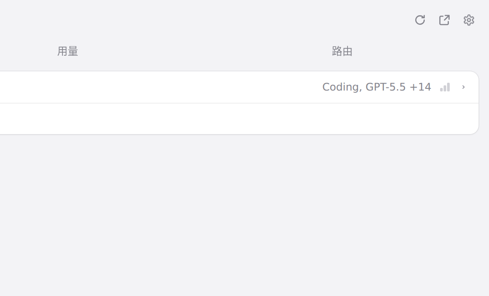
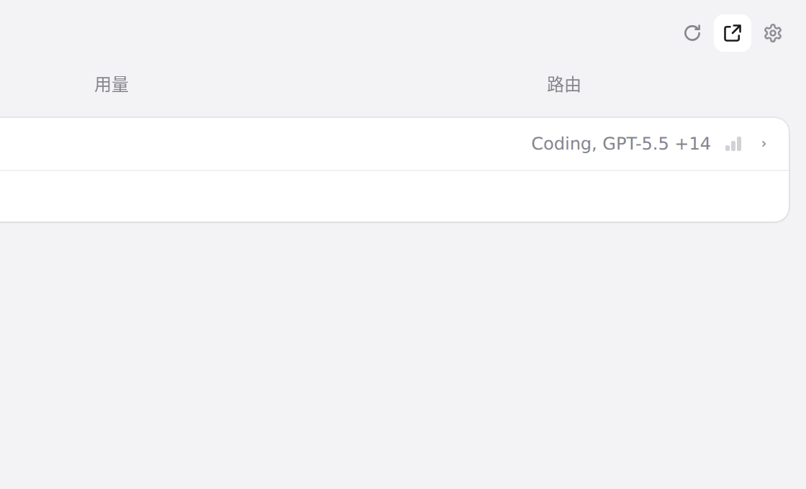
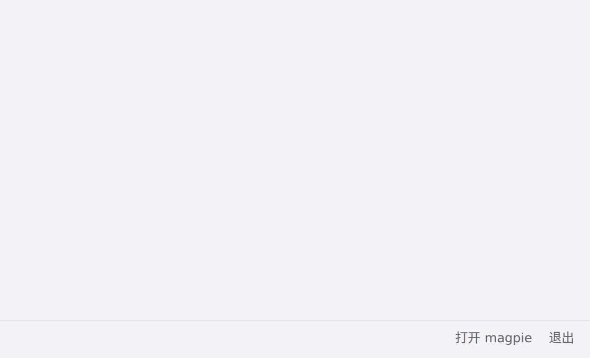

#1255 界面预览
commit 20ae31c · 回到 PR · 这次改动只动 macOS 外壳行为：主窗口被激活（例如点 Dock 图标）时不再被搬到当前桌面，只有隐藏/关闭后重新打开的窗口才跟随当前 Space；网页界面本身没有增删任何元素。
红线是鼠标走过的轨迹，红色圆环是一次点击；底部文字是这一步在做什么。空格暂停，← → 逐段查看。

主窗口的打开入口 · 面板右上角的「在窗口中打开」

主窗口的打开入口 · 悬停时的提示与按钮状态

主窗口的打开入口 · 面板底部的「打开 magpie」，与上面的按钮请求同一件事